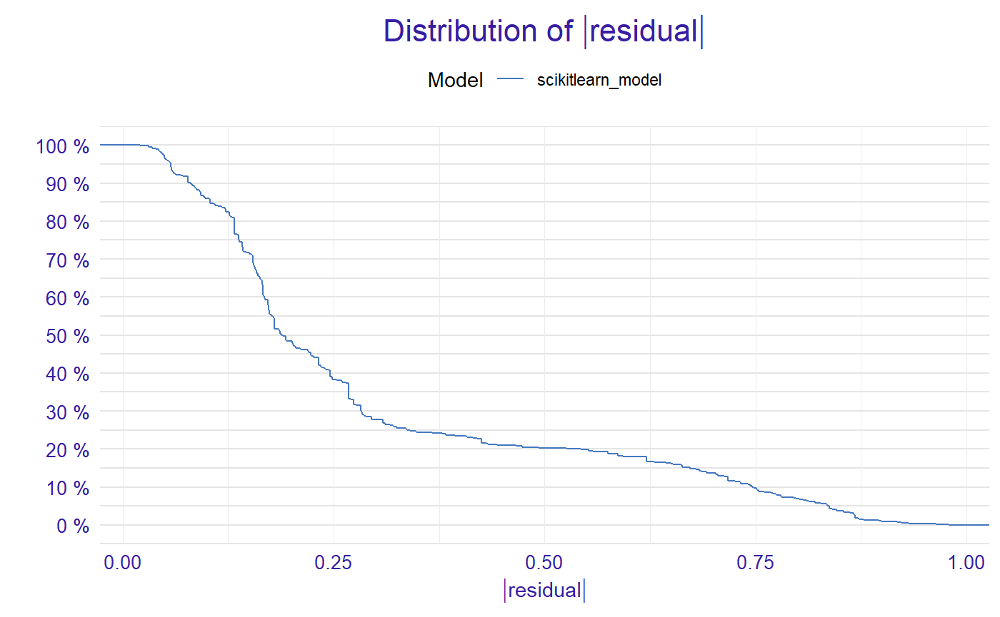
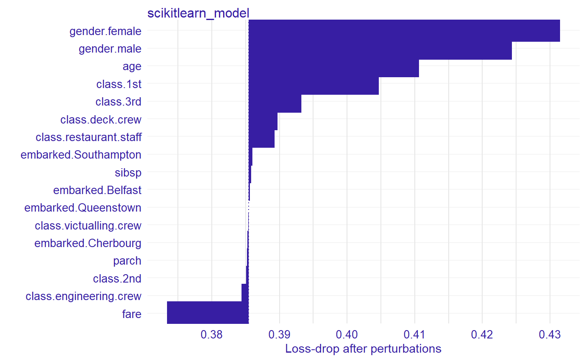
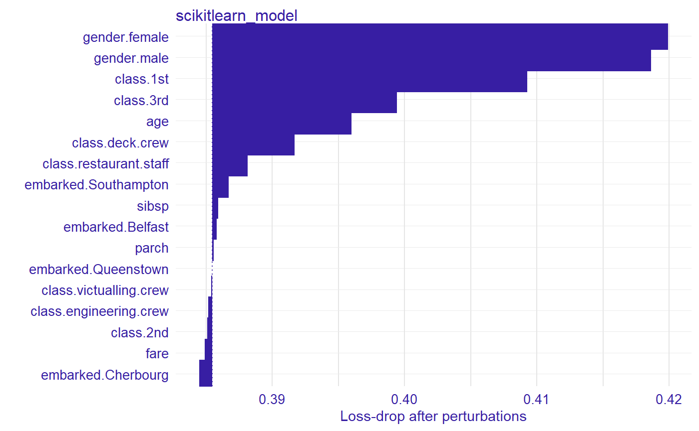

Installation and configuration
Package can be installed with execution of the following code
install.packages("devtools")
devtools::install_github("ModelOriented/DALEXtra")
devtools::install_github("pbiecek/DALEX")It is recommended to install latests github version of DALEX
Package reticulate will be downloaded along with DALEXtra but if you seek for its latests version it can be downloaded here
devtools::install_github("rstudio/reticulate")Packages useful with explanations
devtool::install_github("ModelOriented/ingredients)
devtool::install_github("ModelOriented/iBreakDown)Demo
Here we will present short use case for our package and its compatibility with Python
Loading data
First we need data, explainer is useless without them. Thing is Python object does not store training data so always have to proviede dataset. Feel free to use those attached to DALEX package or those stored in DALEXtra files.
Keep in mind that that dataframe includes targer variable (18th column) and scikit-learn models do not like it
Creating explainer
library(DALEXtra)
explainer <- explain_scikitlearn(system.file("extdata", "scikitlearn.pkl", package = "DALEXtra"),
yml = system.file("extdata", "scikitlearn_unix.yml", package = "DALEXtra"),
data = titanic_test[,1:17], y = titanic_test$survived)## Preparation of a new explainer is initiated
## -> model label : scikitlearn_model ([33mdefault[39m)
## -> data : 524 rows 17 cols
## -> target variable : 524 values
## -> predict function : yhat.scikitlearn_model will be used ([33mdefault[39m)
## -> predicted values : numerical, min = 0.02086126 , mean = 0.288584 , max = 0.9119996
## -> residual function : difference between y and yhat ([33mdefault[39m)
## -> residuals : numerical, min = -0.8669431 , mean = 0.02248468 , max = 0.9791387
## [32mA new explainer has been created![39mCreating exlainer from scikit-learn Python model is very simple thanks to DALEXtra. The only thing you need to provide is path to pickle and, if necessery, something that lets recognize Python environment. It may be .yml file with packages specification, name of existing conda environment or path to Python virtual environment. Execution of scikitlearn_explain only with .pkl file and data will cause usage of default Python.
Creating explanations
Now with explainer ready we can use any of DrWhy.ai universe tools to make explanations. Here is small demo

##
## Attaching package: 'ingredients'## The following objects are masked from 'package:DALEX':
##
## theme_drwhy, theme_drwhy_colors, theme_drwhy_vertical
##
## Attaching package: 'iBreakDown'## The following object is masked from 'package:ingredients':
##
## plotD3
## [1] 0.3565896 0.1321947 0.7638813 0.1037486 0.1265221 0.2949228 0.1421281
## [8] 0.1421281 0.4154695 0.1321947